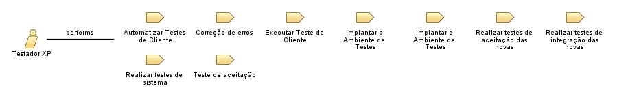

| Role: Testador XP |
 |
|
Relationships
 |
||
| Primary Performs | ||
|---|---|---|
| Modifies |
|
|
| Process Usage | ||
Main Description
A principal responsabilidade do Testador XP é ajudar o cliente a definir e implementar os testes de aceitação para as histórias de usuário. O Testador XP também é responsável pela execução frequente dos testes e a disponibilização dos resultados para toda a equipe. À medida que a quantidade de testes crescer, o Testador XP irá provavelmente necessitar criar e manter algum tipo de ferramenta que torne mais fácil defini-los, executá-los e recolher os resultados rapidamente. |
Staffing
| Skills | Considerando que o conhecimento do domínio alvo das aplicações é fornecido pelo cliente, o Testador XP precisa ajudar o cliente, fornecendo:
|
|---|
| Copyright (c) 2002, 2006 IBM Corporation e Object Mentor. Todos os Direitos Reservados. Este programa e o material que o acompanha são disponibilizados sob os termos da Eclipse Public License v1.0, que acompanha esta distribuição e está disponível em http://www.eclipse.org/legal/epl-v10.html. Colaboradores: IBM Corporation e Object Mentor - implementação inicial |